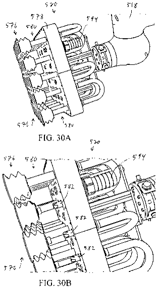
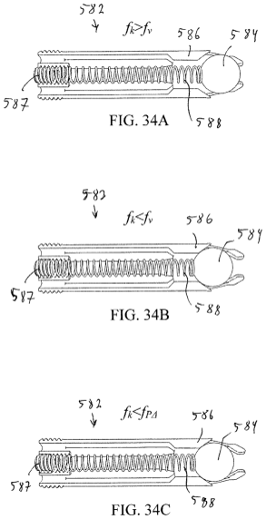
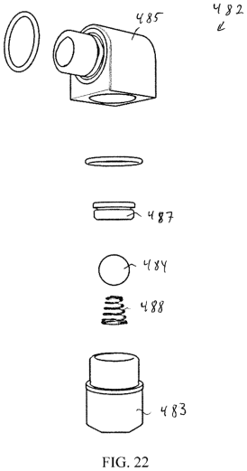

Berkshire Grey / SoftBank Robotics
Suction Gripper End Effector
Engineering Problem
- Grasp multiple packages in an unstructured trailer environment.
- Maintain vacuum grip when only a portion of the suction array contacts packages.


Compliant Gripper Design
Incorporated compliance mechanisms to conform the suction array to irregular, non-coplanar package surfaces.


Vacuum Control
Invented several high-flow vacuum-control concepts to automatically isolate unused suction cups and maintain vacuum at engaged cups.